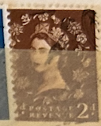
| SOURCE | TITLE| IMAGE MATCH | click to source page |
| eBay | Great Britain Scott #295v Inverted Watermark Used | eBay | 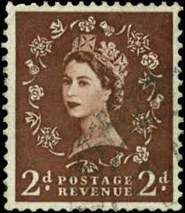 |
| eBay | 1/- Denomination British Elizabeth II Stamps for sale | eBay | 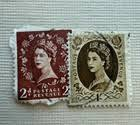 |
| eBay | Postage Revenue ~ Queen Elizabeth II ~ Brown 2D Stamp ~ Posted/Used ~ 1950's ~2 | eBay | 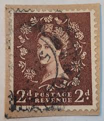 |
| eBay | Great Britain Pre-Decimal Stamp Booklets (1953-1970) for sale | eBay | 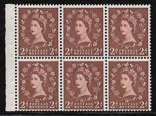 |
| Mystic Stamp | 356ccp - 1959 Great Britain - Mystic Stamp Company | 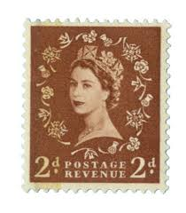 |
| Post Road Company | Collectible Stamp Great Britain Scott 295, Year 1953 | 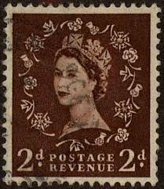 |
| commonwealthstamps.com | Postage Stamps of Great Britain Queen Elizabeth II Pre Decimal - Page 2 | 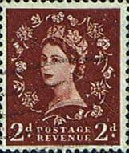 |
| Mercari | 1950s Queen Elizabeth II▪︎Great Britain | Mercari | 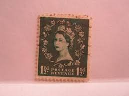 |
| eBay | Postage Revenue Stamp for sale | eBay | 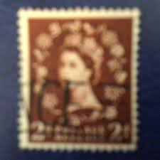 |
| Rowan S Baker | 2d Light Red-Brown - Watermark Edward Crown A superb pristine unmounted mint completely IMPERFORATE Cylinder block of six showing Cylinder ''7''. The ultimate Wilding cylinder block and totally unique!! A gem. QQF | 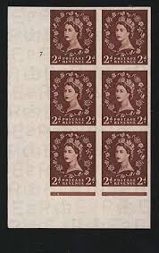 |
| Paul Fraser Collectibles | Great Britain 1955-58 2d Brown "Wilding" (wmk St Edward's Crown), SG54 | 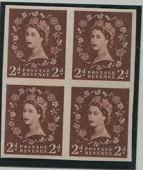 |
| Blogger.com | COSGB: Cussons Sons & Co. Ltd. | 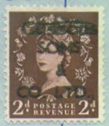 |
| HipStamp | Great Britain, Scott #356, used(o), 1958, Wilding: Queen Elizabeth II, 2d | Great Britain, General Issue Stamp / HipStamp | 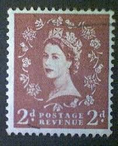 |
| Blogger.com | COSGB: Schweppes Ltd. | 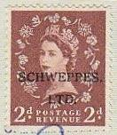 |
| Blogger.com | COSGB: Associated Newspapers Limited | 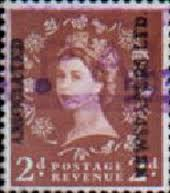 |
| Dreamstime.com | Old Used British Stamp Printed in United Kingdom 1971 24p Showing Portrait of Queen Elizabeth the 2nd Editorial Image - Image of background, culture: 255320920 | 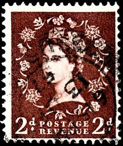 |
| eBay | 1955 Queen Elizabeth ll 2d Postage Revenue Stamp Lot 4 | eBay | 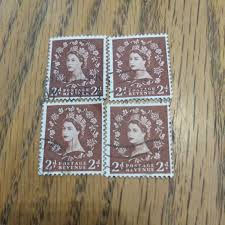 |
| eBay | Postage Revenue ~ Queen Elizabeth II ~ Brown 2D Stamp ~ Posted ~ 1950's ~ O16 | eBay | 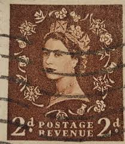 |
| Shutterstock | Queen England Crown: Over 7,974 Royalty-Free Licensable Stock Photos | Shutterstock | 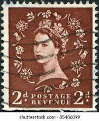 |
| eBay | Great Britain, S.G. #518wi, Booklet Pane, Mint, N.H., Catalog Value 180 Pounds | eBay | 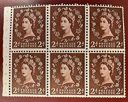 |
| razanatsimba.com | Planner Stamps Elizabeth Craft Postage Stamp Metal Dies - 12 Piece Set For Paper Crafting & Scrapbooking Postage Stamps | 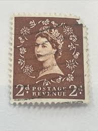 |
| Mark Bloxham Stamps | GB Stamps – Page 65 – Mark Bloxham Stamps Ltd | 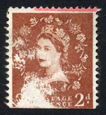 |
| eBay | Great Britain Scott #320 SG #543 Block of 4 Used | eBay | 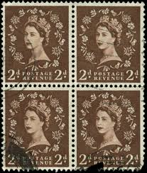 |
| Blogger.com | COSGB: Cluttons | 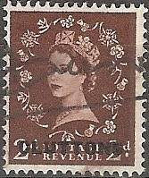 |
| HipStamp | Great Britain, Scott #295, used(o), 1953, Wilding: Queen Elizabeth II, 2d | Great Britain, General Issue Stamp / HipStamp | 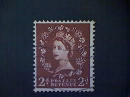 |
| Blogger.com | COSGB: Manufacturers Life | 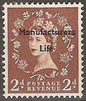 |
| Blogger.com | COSGB: Binns Ltd. | 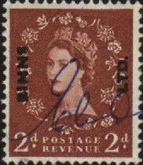 |
| eBay | I.B) Elizabeth II Commercial Overprint : Crosby Corporation | eBay | 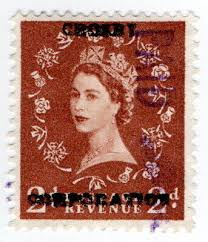 |
| HipStamp | SB78d 2d Wilding listed variety - Shamrock flaw R.2/3 UNMOUNTED MINT/MNH | United States, Stamp / HipStamp | 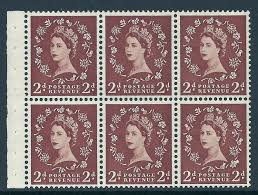 |
| IG Stamps | SG518a 2d Red-Brown 1952 Tudor Crown Sideways Watermark Wilding Stamps | 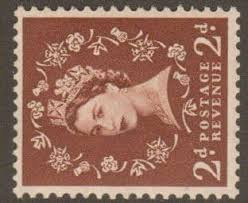 |
| What is the variation of the watermark on this stamp with a crown and letters? | 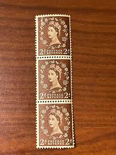 | |
| eBay | George VI (1936-1952) British Elizabeth II Stamps for sale | eBay | 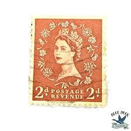 |
| YouTube | Stamp Collecting: Dollis Hill - YouTube | 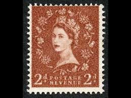 |
| Mystic Stamp Company | 356a - 1958 Great Britain - Mystic Stamp Company | 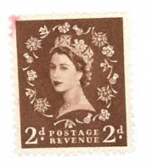 |
| eBay | 1955 Queen Elizabeth ll 2d Postage Revenue Stamp Lot 4 | eBay | 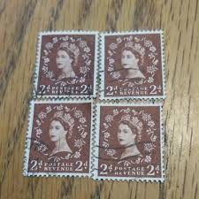 |
| ebid.net | GB Stamp SG 543b used: 1955 2d Queen Elizabeth II (Wilding) [3] on eBid United States | 143287457 | 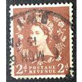 |
| MachinStamps.co.uk | Listings from 'ianlasoksmith' in Selected Wilding Issues - Ending Soon | Machin Stamps | 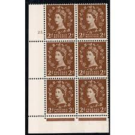 |
| Mark Bloxham Stamps | GB Stamps – Page 72 – Mark Bloxham Stamps Ltd | 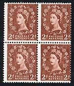 |
| earsathome.com | Queen Elizabeth, Wilding stamps | 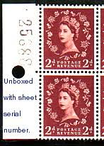 |
| PicClick UK | GB QEII 1952-54 2d RED-BROWN WMK INVERTED SG518Wi USED - SEE PHOTOS £8.65 - PicClick UK | 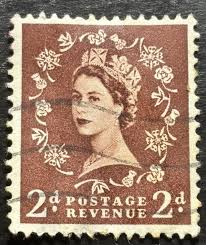 |
| Shutterstock | 8 1960h Royalty-Free Images, Stock Photos & Pictures | Shutterstock | 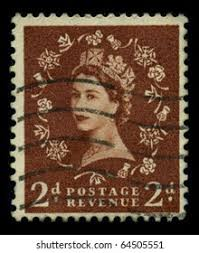 |
| eBay | US Stamp Queen Elizabeth II 2d Used | eBay | 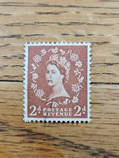 |
| Blogger.com | COSGB: Catesbys Limited | 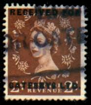 |
| eBay | QEII SG613a S49 2d1967 M/Crown Phosphor 2 x 9.5mm Viol Cyl 27 No Dot MNH Cat £10 | eBay | 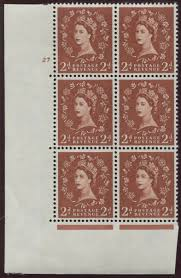 |
| british-stamps.com | British Stamps | Browse Stamps | Elizabeth II (Pre decimal to 1970) | Pre-Decimal Booklet Panes Collection | 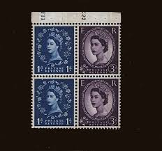 |
| Blogger.com | COSGB: Thomas Borthwick & Sons Ltd. | 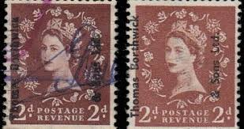 |
| PicClick UK | GB QEII COMMERCIAL Overprints X8 2d Stamps Inc Harrods Electricity Boards NTGB £3.62 - PicClick UK | 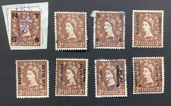 |
| eBay | Perfin Great Britain Used Stamp A25P44F19783 | eBay | 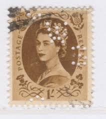 |
| eBay | GREAT BRITAIN 1952 QUEEN ELIZABETH CIRCLE CANCEL REVENUE 13 7 1965 STAMP BLOCK | eBay | 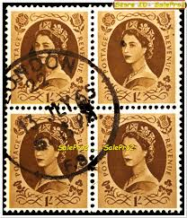 |
| eBay | British Stamp / Queen Elizabeth / 1953-55 / 1 S /SC 306 / Used / 1 Stamp | eBay | |
| Is this a perforation error or a perfin on a stamp? | ||
| Mystic Stamp Company | 355c - 1959 Great Britain - Mystic Stamp Company | |
| Windsor Stamps | 1964 International Botanical Congress, Phosphor | |
| eBay | GREAT BRITAIN^^^#303 hinged ,308 hinged & used ELIZ II$61.00@ sc3046gb47 | eBay | |
| eBay | Perfins Great Britain GB 1955, Block of 4 QE II One Shilling H/H. Sc331 | eBay | |
| PicClick UK | GB STAMP 2 1/2d Postage Revenue Stamp £2.51 - PicClick UK | |
| Blogger.com | COSGB: February 2012 | |
| eBay | GB QE II 1 1/2d Green used | eBay | |
| Paul Fraser Collectibles | Great Britain 1958 Queen Elizabeth II 2d light red brown SG573var | |
| eBay | Great Britain Queen Elizabeth II Stamps Hinged Used Postage Revenue 1' Block | eBay |